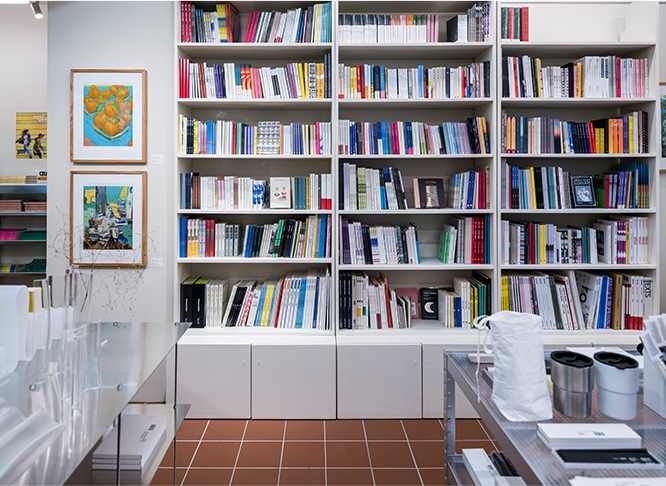
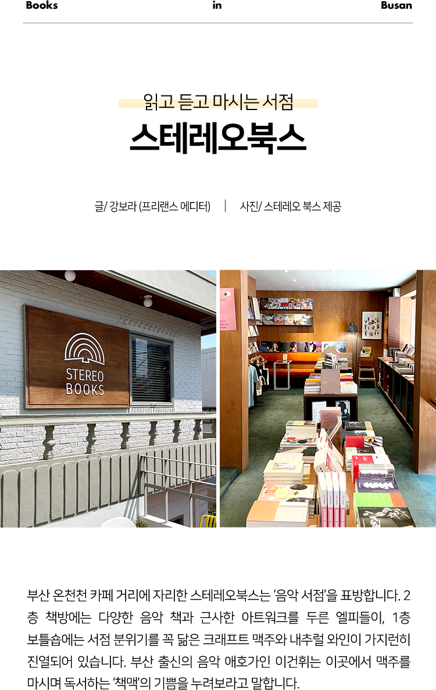

샵 메이커즈는 2010년 장전동에 처음 문을 열었고 최근 남천동으로 이전
하셨죠. 장전동 서점은 지나가던 행인도 내부를 들여다볼 수 있었 는데,
지금은 아늑하고 비밀스러운 공간이 된 것 같아요. 오랜 기간 뿌리를 내린
장전동을 떠나 남천동으로 이전하시게 된 배경이 있나요?
10여 년 넘게 유리 창문으로 된 공간에 있다 보니 조금 피로감을 느끼던
차였어요. 그래서 무조건 2층으로 가겠다고 마음먹었죠. 남천동이 원래 어릴
때부터 저희가 살던 동네예요. 그래서인지 마치 고향에 온 것처럼 편안한
느낌이에요. 처음 서점을 시작했던 장전동은 해마다 신입생으로 가득한
대학가죠. 서점을 찾는 손님들은 20대 초반의 나이 또래인데 저희는 매해
나이 들어 간다는 점도 새삼 느꼈고요. 서점을 지키다 보니 손님들과 소통할
때 어느 순간 갭이 느껴지는 부분도 있더라고요. 취향을 공유하고 싶을 때
아무래도 나이에 따라 관심이 달라지는 부분이 생기기 마련이니까요. 손님과
어느 정도 동질감도 느끼면서 책과 굿즈를 소개하고 싶었어요. 여기 남천동에
와서의 욕심이라면 샵 메이커즈만으로 자립하고싶다는 점이에요. 아직은
아트랩이라는 저희의 디자인 스튜디오가 큰 뒷받침이 되고 있거든요.
샵 메이커즈에는 독립출판물, 디자인 서적, 아티스트 북 등 다양한 장르의
출판물이 있습니다. 샵 메이커즈만의 출판물 입고 방향이 있다면
무엇인가요?
저희 같은 독립서점일수록 큐레이션 된 책이나 사물이 주인장의 취향을
그대로 반영하게 될 수밖에 없어요. 아마 다른 서점들도 마찬가지일 텐데
그만큼 입고 기준이라는 명확한 답이 있기는 어려워요. 기본적으로는 저희가
관심을 두고 있고, 나누고 싶은 책들을 소개하는 편이죠. 영화를 보고 나면
쉽게 후기가 생기잖아요. 그런 마음으로 손님들께도 ‘이 책 좀 보세요. 너무
독특하죠? 이런 책도 있어요.’ 하는 거죠. 신간을 무조건 다 입고하지도
않고, 처음 입고할 때 책을 하나하나 살펴봐요. 그만큼 책을 본 뒤 저희의
감상을 더 넣어서 소개하기도 하고요.
샵 메이커즈 안에는 책을 비롯한 취향의 사물이 있어요. 가구, 문구,
오브제 등 라이프스타일 상품 또한 만나볼 수 있는데요. 미술작가의 판화나
디지털 프린트를 판매하기도 하고요. 각각의 판매 상품도 샵 메이커즈의
정체성과 연결되는 부분이 있을까요?
저희가 직접 써보고 좋았던 제품이나 리빙 소품, 코스메틱이나 가구류 같은
것을 조금씩 골라서 소개해요. 마음의 양식과 사물의 양식이 연결되는
지점이죠. 대학가인 장전동과는 달리 주택가인 남천동이라는 동네의 특성도
반영되고요. 동네 분들이 편히 와서 생활에 필요한 것들도 구입하면서 책도
만날 수 있으면 좋겠어요. 굿즈만 사 가시는 분들도 있기는 하지만 그래도
책도 살펴보실 수 있게 계속 제안해 보고 있어요.
부산의 첫 번째 독립서점이자, 올해로 14년 차 독립서점인데요. 처음 문을
열었을 때와 지금, 독립서점에 관한 반응의 변화, 독립출판인의 변화,
독자층의 변화를 실감하시나요?
확실히 많이 변했죠. 독립출판물도 많아졌고요. 독립출판에 관한 인식은 꽤
대중화가 됐어요. 저희가 2010년에 처음 시작할 때는 독립출판물 이라고 하면
‘그게 뭐예요?’ 하고 되묻는 분위기였어요. 이제는 매체를 통해서 많이
알려지면서 대중화가 되었지만 저희가 느끼기에는 비슷한 종류의
독립출판물이 대량 생산된 측면도 있어요. 독립 출판물만의 매력이 느껴지는
다양한 책들이 성장했다기보다는 매뉴얼대로 나온 독립출판물이 대폭 늘어난
거예요. 그래서 독립출판물 시장이 양적으로 팽창한 것에 비해 매력이
비례하지는 않은 것 같아요. 아마도 독립출판물의 황금기는 저희 서점이 5년
정도 되었을 무렵인 2015년쯤이 아닐까 생각해요. 그 시기에 나왔던 책들은
정말 엉뚱한 주제의 책들, 어떻게 이런 생각을 하는지 궁금해지는 책들,
수작업으로만 만들어 낸 책들이 많았죠.
그간 서점 운영뿐만 아니라 독립출판 워크숍, 북토크 프로그램, 디자인
스튜디오, 카페, 아트북 페어 등 다방면의 프로젝트를 기획, 운영하시 기도
했어요. 서점 운영 이외의 활동에서는 어떤 성취가 있으셨나요?
서점 운영 이외의 활동은 꽤 다른 성취라고도 할 수 있고, 새로운
경험이라고도 할 수 있어요. 독립출판 워크숍 같은 경우는 독립출판을
알리고, 누구나 독립출판물을 만들 수 있다는 순수한 취지로 시작했어요. 꽤
열정적으로 수업을 진행하곤 했죠. 워크숍에 참여한 분들이 다 창작자로
이어지지는 않았지만, 저희가 진행했던 독립출판 워크숍을 통해서 활동을
시작한 분도 있어요. 키미(@kimi_etc) 작가님은 워크숍 이후에 본격적으로
그림도 그리고 책도 만들고 계시죠. 키미 작가님은 부산을 기반으로 활발한
활동을 지속하고 계셔서 저희도 무척 애착이 있어요.
독립출판은 이제 하나의 문화가 되었어요. 문화는 ‘문화를 만들어야
겠다’는 누군가의 의지로 가능해지는 게 아니잖아요. 자연스럽게 생겨나는
것이 문화인데요.
문화가 확장되는 과정에는 평범하지는 않은 소수의 시작이 있기 마련인 것
같아요. 대중문화 위치로의 이동은 그만큼 비슷한 것들이 많아지게 된다는
뜻이기도 하죠. 널리 알려지는 만큼 사람들이 그 문화에 쉽게 동참할 수 있게
되기도 하고요. 저희 서점은 독립서점인 만큼 순환이 원활하지 않기 때문에
옛날에 만들어진 오래된 책들도 꽤 남아있어요. 오래전 만들어진
오리지널리티가 있는 책들을 발견하는 느린 즐거움을 기대하죠. 이런 책들은
개인이 소규모로 만들고, 도서관에 입고되지 않으니까 매진되면 끝이에요.
요즘 나오는 에세이 위주의 독립출판물들도 좋지만 예전에 나왔던 개인의
사유와 고민이 많이 담겨 있는 책들도 정말 근사해요. 조금 서툴더라도
독립출판의 정신에 더 어울리는 것 같기도 하고요.


스테레오북스에서는 구체적으로 어떤 일들이 벌어지고 있나요?
음악 서적 관련 북토크와 음악 감상회, 인문・예술 관련 강의 등을 매년
꾸준히 기획하고 있어요. 지역 주민들이 다양한 예술 콘텐츠를 쉽게 접할 수
있는 장을 마련하는 게 동네 책방의 한 역할이라고 생각해서요. 기억에 남는
이벤트도 있어요. 서울에 계신 ‘안나푸르나’ 출판사 대표님이 고가의 오디오
장비와 수십 장의 엘피를 차에 싣고 오셔서 진행한 음악 감상회요. 오디오
마니아들이 왜 그렇게 큰돈을 들여 오디오 시스템을 구축하는지 생생하게
깨달은 시간이었죠. 참, 스테레오북스에서는 음악 관련 서적 외에 시디와
엘피도 함께 소개하고 있어요. 특정 장르를 고집하는 건 아닌데 신기하게
재즈 관련 책과 음반을 찾는 손님이 많은 편이고요. 레코드 전문점에 비하면
음반 보유량은 당연히 적은 편이지만 대신 대중이 잘 모르는 인디 뮤지션
위주로 음반을 입고해 차별화를 꾀하고 있습니다.
건물 2층은 서점으로, 1층은 수제 맥주 바틀숍 ‘흐흐흐’로 운영하며 ‘책맥’
문화를 퍼뜨리고 있어요. 책과 술이라니 언뜻 불협화음처럼 느껴지기도
하는데요.
책방을 옮기면서 공간 한쪽에 크래프트 맥주 보틀숍 ‘위켄드커먼’을 숍인숍
개념으로 운영하다가 기회가 닿아 1층에 생맥주를 즐길 수 있는 보틀숍 겸
탭룸 ’흐흐흐’를 정식으로 오픈하게 되었어요. 그러잖아도 책방에서 책맥을
즐기는 손님이 꽤 계셨는데, 이제는 더 본격적으로 손님들에게 맥주에 대한
다양한 경험을 제공하게 됐죠. 맥주 외에 다른 술을 찾는 분도 많아서 내추럴
와인을 함께 판매하고 있고요. 지금도 1층에서 맥주를 구입하면 2층 책방에서
책맥이 가능해요. 단, 구입한 책에 한해서요.
부산은 1980~90년대 인디 음악의 메카로 불렸던 도시잖아요. 그런 역사성이
서점의 정체성에 자연스럽게 영향을 미칠 것 같기도 해요.
저희가 부산에 있는 음악 서점이다 보니 부산 음악에 관한 책을 찾는 손님이
꽤 계세요. 부산 인디 음악 신이 여전히 활발하게 돌아가고 있기도 하고요.
책방에서도 부산을 기반으로 활동하는 인디 뮤지션들의 어쿠스틱 공연을 매해
진행하고 있습니다. ‘책갈피’라는 타이틀 아래 포크 뮤지션 윤도경 님이 다른
뮤지션을 초청해 진행하는 소규모 콘서트인데요. 두 뮤지션이 각자 한 권의
책을 선정해 공연 중간에 마음에 드는 부분을 낭독하고 그에 대해 이야기하는
시간을 가져요.
부산에는 저마다의 개성을 앞세운 독립서점이 많아요. 그만큼 차별화된 북
큐레이션이 필요할 것 같은데요.
부산뿐 아니라 전국적으로 개성 있는 큐레이션을 자랑하는 독립서점이
많아지는 추세예요. 스테레오북스는 음악 서점인 동시에 동네 책방의 역할도
수행하고 싶기에, 지역 주민과 독립출판물을 사랑하는 독자들에게 최대한
다양한 선택지를 제공하려 노력하고 있어요. 아이와 함께 방문하는 손님들을
위해 그림책을 입고하거나 소설・에세이 같은 상업 출판물과 실험적인 독립
출판물을 균형 있게 다루는 식으로요. 제가 그래픽 디자이너 출신이라
디자인・건축・미술 관련 책의 비중 또한 적지 않은 편입니다. 음악 서적도
당연히 꾸준히 소개하고 있고요.
마지막으로 부산의 매력을 닮은 음반과 음악책을 하나씩 소개해 주세요.
이제는 글로벌 밴드로 성장한 부산 출신 인디 록 밴드 세이수미의 정규 2집
<Where We were Together>를 추천하고 싶어요. 여름날의 광안리 해변을
떠오르게 하는 흥겨운 노래부터 항구 도시의 잔잔한 애수를 담은 노래까지,
듣다 보면 부산의 다양한 풍경과 정서가 스치는 앨범입니다. 책은 모토
히데야스의 그래픽 노블 <레코스케>를 추천할게요. 비틀스의 조지
해리슨을 좋아하는 음반 컬렉터가 음반을 수집하는 과정에서 맞닥뜨리는
일들을 보여주는 책인데요. 좋아하는 앨범을 발매 연도와 레이블 등에 따라
다양한 버전으로 수집하는 주인공의 마음이 부산을 자주 찾는 사람들의
마음과 맞닿는 지점이 있는 것 같아 골라봤어요. 부산이야말로 산과 바다와
동네 풍경이 시시각각 다채롭게 변화하는 도시니까요.
 더 많은 콘텐츠 보러가기
더 많은 콘텐츠 보러가기